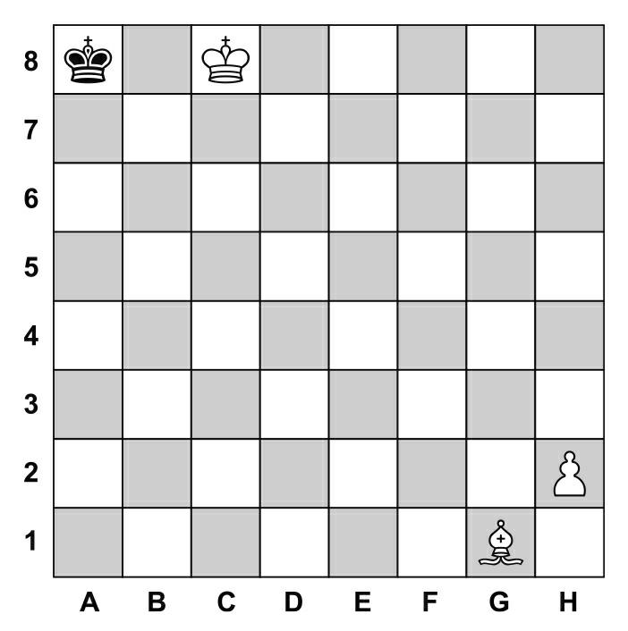
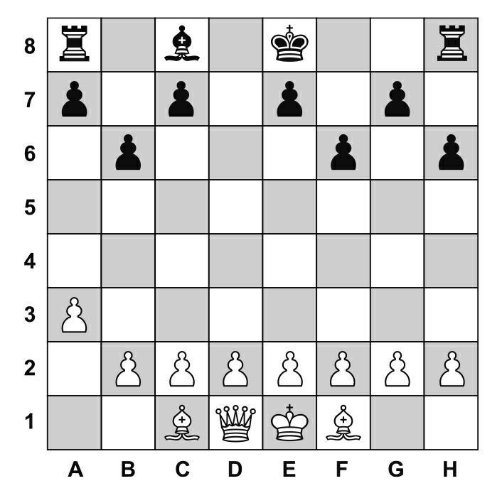

三位数学家坐在咖啡厅里闲聊。服务生上前询问：“请问三位是不是都需要点杯饮品？”第一位数学家说：“我不知道。”第二位数学家说：“我不知道。”第三位数学家说：“不是。”我们该如何理解这番对话呢？理解这番对话需要运用正向思维和逆向思维。
服务生上前询问：“请问三位是不是都需要点杯饮品？”这三位数学家的回答可以给我们提供这些信息：“我想要一杯喝的，但是我并不知道其他两位要不要饮品，而在此情此景下只可能回答‘想喝’或者‘不想喝’，因此我说我不知道。”而当第一位数学家不想喝饮品时，他回答问题时一定会说“不是（所有的人都想喝饮品）”。
这时轮到了第二位数学家。第一位数学家说的话让他推断出第一位数学家其实想喝饮品，因此我们可以推断出第二位数学家说的“我不知道”中含有这几层意思：他想喝点东西（否则他就会直接回答“不是”），但是他不知道仅剩的一位数学家想不想点饮品。此时他也无法确定自己的回答是肯定的还是否定的，因此他也回答了“我不知道”。
最后轮到第三位数学家。他由前两位数学家的论述推导出来了他们真实的内心想法，但他自己不想喝，因此他可以对服务员的提问明确地回答“不是”。
有了前文的例子我们就能更好地理解下面的棋盘谜题了。解开这道题需要运用逆向思维。首先，我们需要仔细地观察此棋盘。

谜题的谜面为：这个残局是通过刚刚黑方走的一步造成的吗？如果是的话，在这个局面发生之前，白方和黑方都走了哪几步？因此，这个谜题的解决思路就在于人们需要思考这个结果出现之前的所有局面，这需要逆向演绎推理能力。如果黑方在之前真的移动了棋子，那么移动的一定是黑方的王，且一定是从其他位置移动到了A8(1)。但我们分析到现在，对于黑棋的走法仍很模糊，所以我们需要进一步了解在黑棋走动之前还发生了什么，黑棋从其他地方走到了A8究竟是为什么。
因为白方的王处于C8，所以黑方的王只可能从A7移动到A8(2)。但如果黑方的王之前处于A7，白方的象（位于G1）就能将军(3)。
但是从A7到A8是黑方的王移动到如今的棋盘位置的唯一路径，因此我们需要再次思考有没有使从A7移到A8这步棋成立的其他伴随条件。
事实上这一步棋是可行的：如果B6处有棋子可以阻挡位于G1处的象将军的话，黑方的王就可以位于A7的位置。但是在该残局的棋盘中，并没有这枚棋子，因此我们可以假想，在这个棋子阻断了象的将军之后就从棋盘上消失掉了。
这便意味着这枚棋子不可能是黑方棋子——因为如果有黑方棋子处于B6的位置，黑方在这次走棋中只移动了黑方的王——从A7到A8，那么这枚黑色的棋子应该还留在棋盘上。
因此，我们可以得出结论：处于B6位置的棋子一定是一枚白棋，并且在黑方的王从A7移动到A8的同时消失掉了。如果这两点同时满足，谜题的关键就浮现出来了——这枚白色的棋子在A8的位置被黑方的王吃掉了。
但为什么白方棋子会无缘无故地走到A8的位置呢？这一步棋理应发生在黑棋移动王之前，而这一枚白方棋子从B6的位置移动到了A8的位置。这就不难猜想这枚白方棋子是马(4)。这时候我们就可以利用逆向思维重建当时的局势了：棋局下到一定程度之后，黑方的王位于A7，白方的马位于B6。白方的马跳到A8的位置，不再阻挡处于G1位置的象的移动路线，白方用象将军，因此黑方的王向后一步走到A8吃掉白方的马——形成棋盘中的残局。
现在大家有兴趣变身解谜大师，解决此类“象棋谜题”吗？轮到你们了！下面这盘棋中轮到黑方走棋，黑方能顺利地“王车易位”(5)吗？

(1) 国际象棋中王（King）的走棋规则为：横、直、斜走均可，但每次只能走一格，即它只能走到以它为中心的九宫格内。
(2) 处于A8位置的黑方的王只可能从A7、B7或者B8移动而来，但当黑方的王处于B7或者B8时，都可以直接将军取得胜利。所以残酷的局面是由黑方的王从A7移到了A8造成的。
(3) 国际象棋中象（Bishop）只可斜走，格数不限，但不可转向，也不可越过其他棋子。
(4) 国际象棋中马（Knight）的走法与中国象棋相同，走“日”字且不受“绊马脚”的限制。
(5) “王车易位”是国际象棋中的一种特殊走法，在一局棋中双方各有一次机会，可以同时移动自己的车和王，作为王执行的一步棋。具体走法为：王向一侧车的方向走两格，再让车越过王放在与王相邻的一格上。